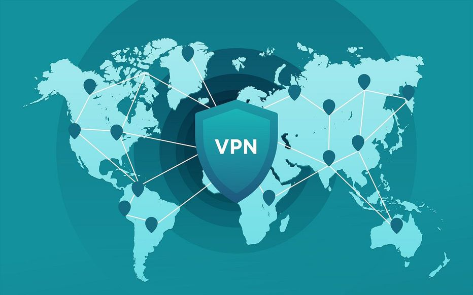

Introduction
Les réseaux privés virtuels, communément appelés VPN, ont émergé comme des outils essentiels dans le paysage numérique moderne. Ces technologies offrent une solution sécurisée pour la transmission de données sur Internet, protégeant la vie privée des utilisateurs et renforçant la sécurité en ligne. Dans ce résumé, nous explorerons les principaux aspects des VPN, leurs avantages et leurs applications.
Fonctionnement des VPN
Les VPN fonctionnent en établissant une connexion cryptée entre l'appareil de l'utilisateur et un serveur distant. Cette connexion sécurisée assure que toutes les données échangées entre l'utilisateur et Internet sont protégées contre les regards indiscrets. Les protocoles de sécurité tels que le SSL/TLS et l'IPsec sont souvent utilisés pour renforcer cette protection.
Avantages des VPN
Sécurité accrue : les VPN offrent un tunnel sécurisé qui empêche les tiers de surveiller les activités en ligne de l'utilisateur, assurant ainsi la confidentialité des données.
Contournement des restrictions géographiques: les VPN permettent aux utilisateurs d'accéder à des contenus géo-restreints en modifiant leur emplacement virtuel.
Protection sur les réseaux Wi-Fi publics : l'utilisation d'un VPN renforce la sécurité lors de la connexion à des réseaux Wi-Fi publics, évitant les risques potentiels de piratage.
Applications des VPN
Usage personnel :Les individus utilisent les VPN pour sécuriser leurs activités en ligne, contourner les restrictions géographiques et accéder à des contenus restreints.
Utilisation professionnelle : Les entreprises implémentent des VPN pour sécuriser les communications internes, permettre l'accès distant aux employés et protéger les données sensibles.
Conclusion
Les réseaux privés virtuels sont devenus des outils incontournables dans le monde numérique actuel. Leur capacité à renforcer la sécurité en ligne, à protéger la vie privée des utilisateurs et à contourner les restrictions géographiques en font des alliés précieux pour les individus et les entreprises. Alors que la cybercriminalité et les préoccupations liées à la confidentialité persistent, l'utilisation judicieuse des VPN demeure une stratégie clé pour naviguer en toute sécurité dans le monde connecté d'aujourd'hui.